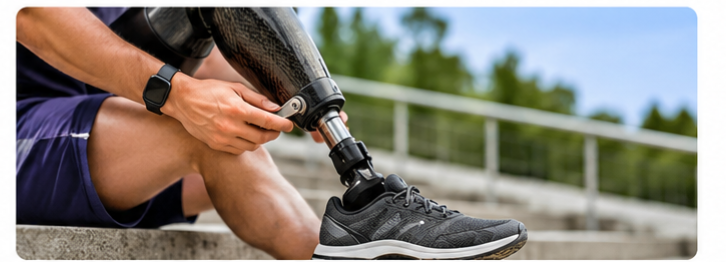
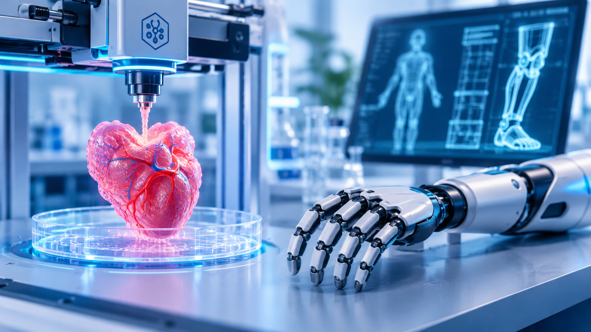

Medical imaging
Explore technologies that help clinicians visualise structures inside the human body.
Explore imaging ↗DISCOVER · LEARN · INNOVATE
Explore the science where engineering meets medicine. Discover the technologies, ideas and innovations shaping the future of healthcare.

01 — THE DISCIPLINE
Biomedical engineering applies engineering principles and design to medicine and biology. Its goal is to understand the human body and develop technologies that support better healthcare.
Explore technologies that help clinicians visualise structures inside the human body.
Explore imaging ↗Understand movement, forces and the mechanical behaviour of biological systems.
Explore biomechanics ↗Learn how materials are designed to interact with tissues and medical environments.
Explore biomaterials ↗Discover engineering approaches to understanding and interfacing with the nervous system.
Explore neural tech ↗02 — TECHNOLOGY IN ACTION
From diagnostic imaging to life-support systems, biomedical devices translate engineering concepts into tools used across healthcare.

Learn how magnetic fields and radiofrequency signals are used to create detailed images of internal body structures.

Explore how sensors and signal processing help monitor vital physiological parameters.

Discover how mechanics, electronics and control systems can support mobility and daily activities.
03 — WHAT'S NEXT
Emerging technologies are creating new ways to study biology, support clinicians and design patient-centred solutions.



04 — LEARNING HUB
A structured beginner-friendly library covering core concepts, medical devices, emerging technologies and career foundations. Search by topic or choose a subject area.
Understand magnetic fields, radiofrequency pulses and image reconstruction.
Read article →Explore forces, motion, joints and the mechanics of human movement.
Read article →Learn how AI is studied for imaging, workflow support and health data.
Read article →See how electrodes and signal processing record cardiac electrical activity.
Read article →Discover material properties and how materials interact with biological systems.
Read article →An introduction to bioinks, printing methods and tissue engineering research.
Read article →Explore light-based sensing and the meaning and limits of SpO₂ readings.
Read article →Learn about sockets, components, control approaches and user-centred design.
Read article →Understand the recognition element, transducer and output signal in a biosensor.
Read article →Explore cells, scaffolds and signalling in regenerative medicine research.
Read article →Compare pathways in clinical engineering, design, research and quality.
Read article →No matching articles. Try another keyword or category.
Learning note: Articles are introductory educational summaries, not medical advice, device instructions or clinical guidance. Always consult qualified professionals and authoritative technical documentation for clinical decisions.
05 — CAREER PATHWAYS
Biomedical engineering connects multiple disciplines. Depending on your interests and qualifications, you could explore roles in medical device design, clinical engineering, research, quality, regulatory affairs or healthcare technology.
Start a conversation →GOOD TO KNOW
A few starting points for anyone exploring the field.
Biomedical engineering is an interdisciplinary field that applies engineering principles to biology and medicine to understand health-related problems and develop technologies for healthcare.
No. It also includes biomechanics, biomaterials, tissue engineering, medical imaging, neural engineering, rehabilitation engineering and computational biology.
Depending on the specialisation, useful foundations can include biology, physics, mathematics, electronics, mechanics, materials science, programming and data analysis.
Yes. Career pathways may include medical technology companies, hospitals, research organisations, diagnostics, healthcare software and device manufacturing.
06 — ABOUT THE PROJECT
BioMed Atlas is an educational initiative designed to make biomedical engineering easier to explore. It brings together introductory explainers on medical devices, human biology, engineering principles and emerging healthcare technologies.
Inspired by the learning-oriented work shared through the Biomedical Innovation Hub blog, this website aims to encourage curiosity, accessible learning and awareness of innovation in healthcare.
Mahalakshmi S is associated with the Biomedical Innovation Hub, a knowledge-sharing space focused on biomedical innovation and healthcare technology. Visit the blog and professional profile to learn more about her work and interests.
Website ideation and design, technical background, and development of the BioMed Atlas digital learning experience.
LET'S CONNECT
Have a topic suggestion, collaboration idea or question about biomedical engineering? Send a message.